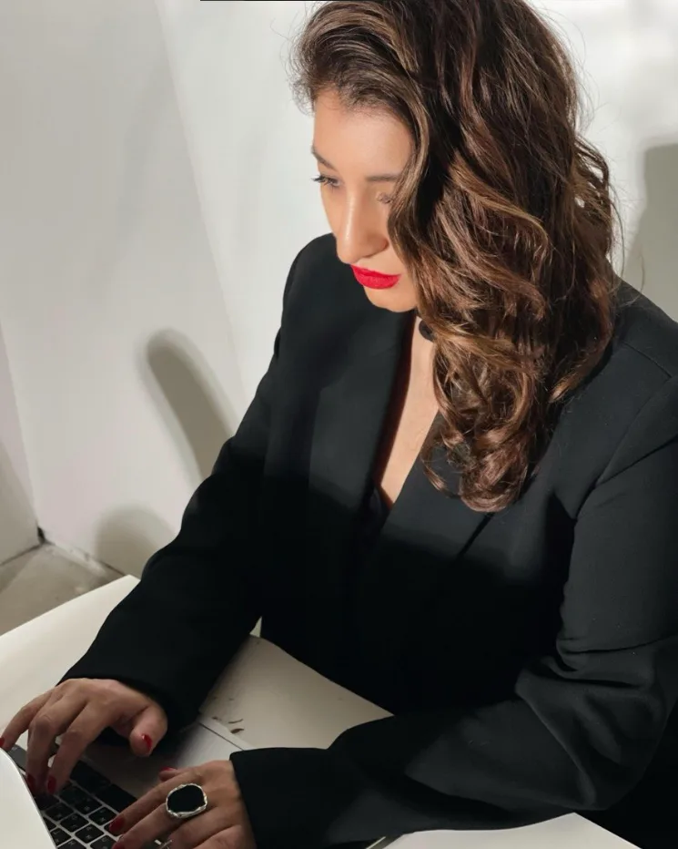
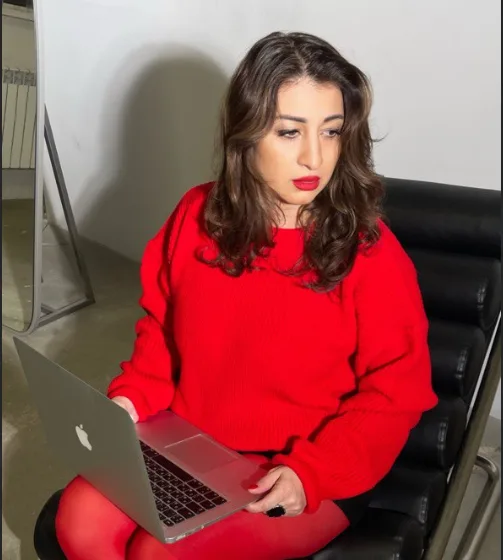
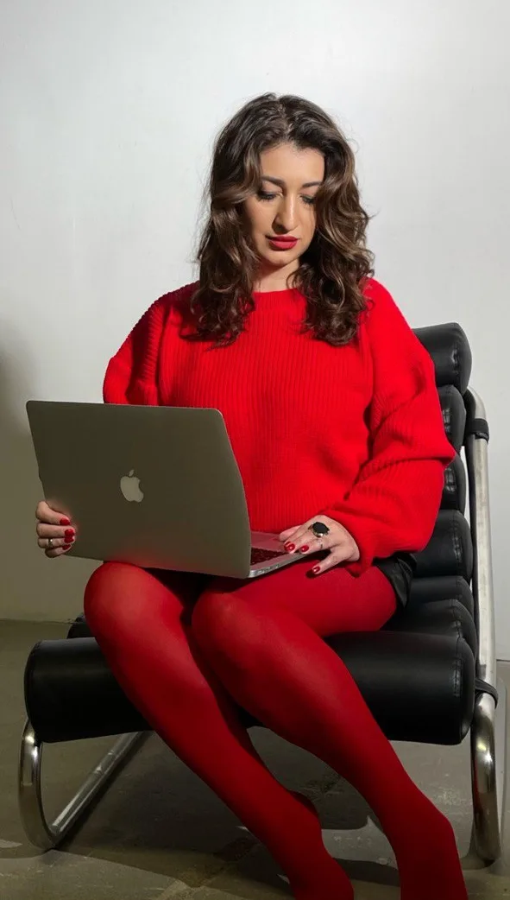
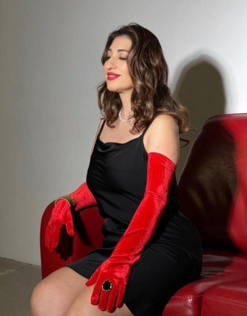
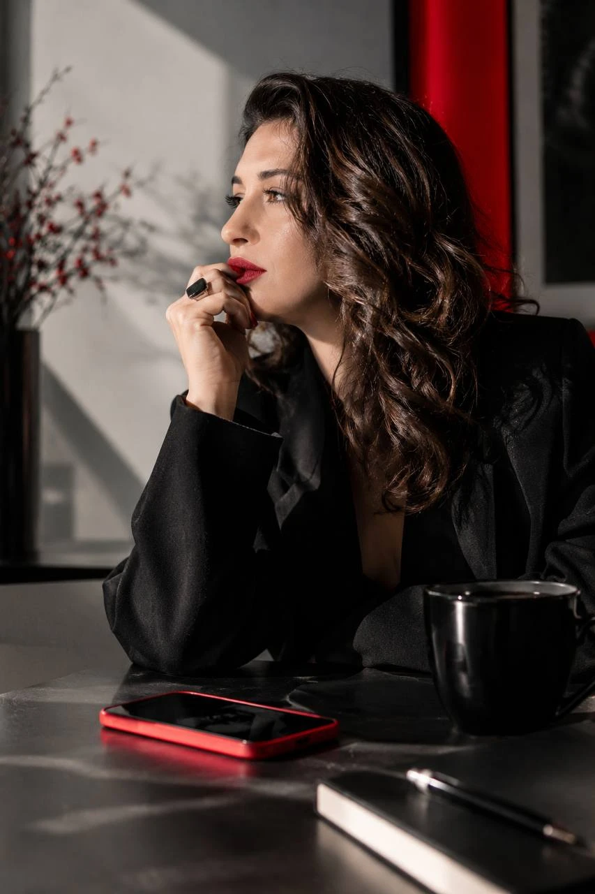

Очно или онлайн
Индивидуальная терапия
Исследуем то, что повторяется, мешает слышать себя или оставляет ощущение тупика. В темпе, который подходит именно вам.
Обсудить запрос
Психолог, гештальт-терапевт, сексолог
Помогаю внимательнее слышать себя, разбираться в том, что происходит внутри, и выстраивать живой контакт с собой и другими.



Не обязательно знать всё заранее. Можно прийти с ощущением, что снова происходит одно и то же. Мы разберёмся вместе, без ярлыков и в вашем темпе.
Индивидуальные встречи или групповая терапия. Очно в Москве или онлайн.
Исследуем то, что повторяется, мешает слышать себя или оставляет ощущение тупика. В темпе, который подходит именно вам.
Обсудить запрос
Видно, как вы сближаетесь, просите, отказываете, занимаете место и реагируете на обратную связь.
Смотреть группыСтоимость сексологии Инна подскажет в сообщениях.
Гештальт-терапия и телесно-ориентированный подход.
ЗаписатьсяЖелания, телесность, близость и общение с партнёром.
Узнать стоимостьЗа встречу в группе «Живая сексуальность». О других группах расскажу в сообщениях.
Подробнее о группе
Инна работает без осуждения и давления, уважая границы и личный опыт. Стиль может быть поддерживающим или более направляющим, в зависимости от того, что помогает вам оставаться в контакте с собой.
На первой встрече смотрим, что привело вас именно сейчас.
Исследуем чувства, потребности и то, что хочется изменить или понять.
Согласуем цели, формат и темп. Соответствовать чужим ожиданиям не нужно.
Быть рядом с другими и оставаться собой. Сейчас открыт набор в группу «Живая сексуальность».
Набор открыт · Терапевтическая группа для мужчин и женщин
Тело. Желания. Близость. Удовольствие.
Насколько хорошо вы знаете собственные желания? Можете ли говорить о том, что вам нравится, чувствовать своё тело, проявлять инициативу и оставаться собой рядом с другим человеком?
Сексуальность — это не только про секс. Это про контакт с собой, принятие своего тела, способность хотеть, выбирать, чувствовать и получать удовольствие.
«Живая сексуальность» — пространство для исследования себя, своих желаний и отношений с другими людьми.
Необязательно приходить с конкретной проблемой. Иногда достаточно желания лучше понимать себя и исследовать свою сексуальность.
В течение 12 встреч мы будем работать с темами:
Как я воспринимаю себя и насколько свободно чувствую себя в собственном теле.
Чего я хочу, как распознаю свои потребности и разрешаю себе получать удовольствие.
Что мешает проявляться, говорить о желаниях и принимать себя.
Насколько моё ощущение собственной ценности зависит от чужого внимания.
Как я строю отношения, открываюсь другому человеку и сохраняю контакт с собой.
Как говорить о своих желаниях, отказывать, просить и уважать другого.
Как прошлый опыт и усвоенные установки влияют на мою сегодняшнюю сексуальность.
Иногда мы многое понимаем о себе, но продолжаем повторять привычные сценарии в отношениях.
В группе появляется возможность увидеть, как эти сценарии проявляются непосредственно в контакте с другими людьми.
Группа становится пространством, где можно исследовать эти реакции, получать обратную связь и пробовать новые способы взаимодействия.
Это не тренинг сексуальных техник и не лекционный курс.
Групповые обсуждения, терапевтические упражнения и эксперименты. В центре внимания — чувства, телесные ощущения, личный опыт и отношения между участниками.
Мужчины и женщины. Это позволяет исследовать не только собственную сексуальность, но и то, как мы строим контакт с людьми другого пола.
Никто не обязан рассказывать интимные подробности или делать то, к чему не готов. Прикосновения и телесные практики возможны только при явном согласии.
Группа не предназначена для знакомств и поиска сексуальных партнёров.
Ведущая группы
Психолог · Гештальт-терапевт · Сексолог
В своей работе я соединяю гештальт-подход и сексологическую перспективу. Исследую вместе с клиентами темы близости, сексуальности, самооценки, эмоциональной зависимости, личных границ и отношений.
Мне важно создавать пространство, в котором можно говорить о сложном без осуждения и давления, лучше понимать себя и находить собственные способы строить отношения.
Перед вступлением проводится индивидуальная предварительная беседа. Мы:
Набор открыт. Начало работы — после формирования состава участников.
Беседа не обязывает вас вступать в группу.
Оставить заявкуСвои желания. Своё тело. Свои границы. Свою способность быть в близости и получать удовольствие.
Записаться на предварительную беседуДля мужчин и женщин, которым важно лучше чувствовать свои потребности, границы и способы взаимодействия.
Напишите, какой формат вы рассматриваете. Подробности запроса не обязательны. Инна ответит и расскажет о следующем шаге.